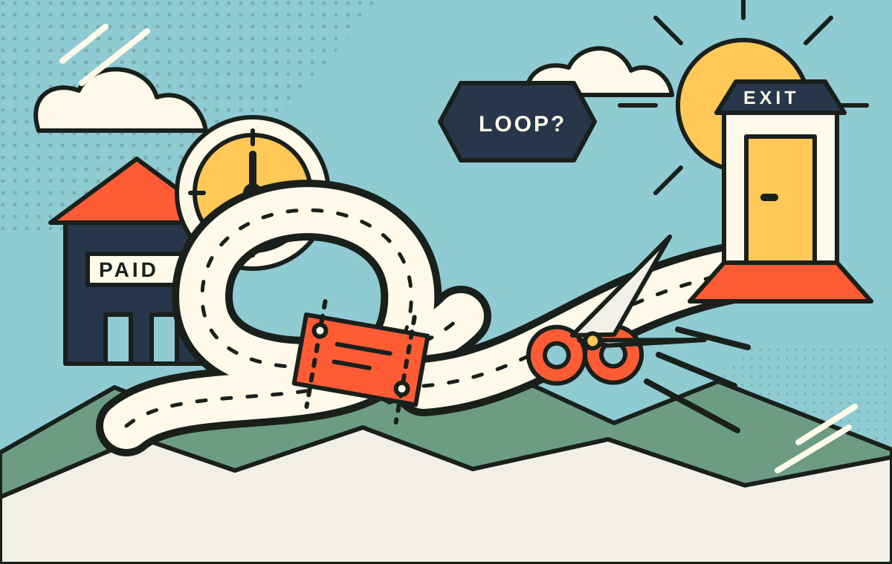
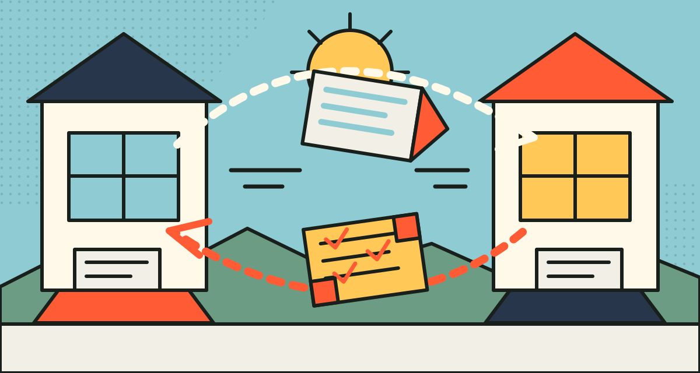

今日样张 / COGNITION难度 02

已经付出的成本，为什么不该决定下一步？
答案线索：先放下“已经花了多少”，只比较从现在开始，继续与停下各自还要付出什么。

答案线索：先放下“已经花了多少”，只比较从现在开始，继续与停下各自还要付出什么。
不是三张功能卖点，而是三张可以真正翻开、作答和改写的知识卡。
先选一张。稀有度只代表角度少见，不代表数值更强。
正面只保留一个问题。背面不只给结论，还留下类比、反例与可查来源。
回到抽卡区，先挑一张你愿意讲给别人听的卡。
FLIPPAL · LOCAL CARD
翻过卡片后，这里会出现解释。
先读懂，再用自己的话重写。记住原文不等于理解。
来源将在选卡后显示
四个槽位把“我懂了”拆成可检查的表达：事实、类比、反例，以及真正属于你的句子。
先完成一次小测，再开始改写。
原卡会留在左侧，但不提供一键复制。你的表达必须走到右侧。
我还在等你的版本。先通过小测，再把四格写完。
漂流不是把卡片扔进黑洞。陌生读者会指着你的具体句子，告诉你哪里终于听懂了。

完成改写后，你的「说给陌生人」会出现在这里。
OC 不因为你点了几次而成长。理解、表达与收到反馈，分别留下不同的成长痕迹。
0成长值
完成小测、改写和漂流，分别获得 12、16、24 点成长值。